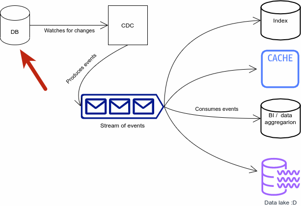
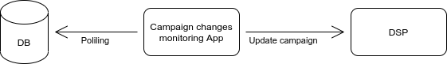
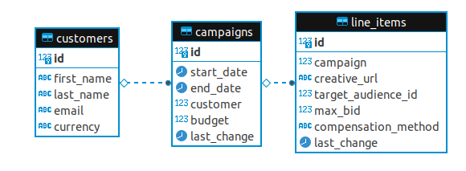

Change Data Capture
know everything that happens in your db
Dawid Mazur / @dwdmzr
"Experienced" Backend Developer @ Clearcode
What will I talk about
- CDC (duh)
- CDC variants and applications
- A little AdTech
- A small AdTech case study
- Problems CDC solves
- Problems CDC creates (potentially)
- Takeaways
What is CDC?
In databases, change data capture (CDC) is a set of software design patterns used to determine (and track) the data that has changed so that action can be taken using the changed data.
Why am I talking about it?
- It's not that well known
Why am I talking about it?
- It's not that well known
- It's simple but very powerful
(well it's not that simple to implement but more on that later)
So.. what exactly is that CDC?
One database as a source of truth
All operations on the DB are messages
Several consumer in sync with data
Most importantly: We do not need polling / last_changed fields / custom logic
Where can we use CDC?
- Caching
- Indexing
- ETL, streaming to other systems
- Data aggregation
- and...
We do AdTech
Adtech problem
Updating campaigns ASAP
The application
How do we check if campaigns changed?
How do we check if campaigns changed?
How do we check if campaigns changed?
DB polling has it's issues
- The interval is hard to nail
- Additional load on the DB
- Changes have to be handled manually
- Custom solutions are error prone
- We have better ways of doing that :d
Let's pick a CDC framework
Oracle GoldenGate

Hevo
Stitch
Talend
Debezium
What is Debezium?
Debezium is a Kafka Connect connector
which enables CDC on popular databases
What is all this stuff?
You already know what CDC is
...and I really hope you know
what a database is
What is Kafka
Fast, scalable, durable, and distributed messaging system that records all messages in replicated, partitioned, and totally-ordered transaction logs
What is the Kafka Connect
Tool for scalably and reliably streaming data between Apache Kafka and other systems. It makes it simple to quickly define connectors that move large collections of data into and out of Kafka.
Connector types

Debezium is a collection
of a source connectors
Let's fix our problem with CDC
1. Configure Kafka and Kafka Connect
2. Install Debezium Connector
Kafka Connect has a nice REST API
Kafka Connect has a nice REST API
Kafka Connect has a nice REST API
3. Consume messages
Win #1: We get whole existing DB history
event key structure
{
"schema": {
"type": "struct",
"fields": [
{
"type": "int32",
"optional": false,
"default": 0,
"field": "id"
}
],
"optional": false,
"name": "dbserver1.campaigns.line_items.Key"
},
"payload": {
"id": 10001
}
}
create event structure
{
"schema": {
"type": "struct",
"fields": [
{
"type": "struct",
"fields": [
{
"type": "int32",
"optional": false,
"default": 0,
"field": "id"
},
{
"type": "string",
"optional": false,
"field": "first_name"
},
{
"type": "string",
"optional": false,
"field": "last_name"
},
{
"type": "string",
"optional": false,
"field": "email"
},
{
"type": "string",
"optional": false,
"field": "currency"
}
],
"optional": true,
"name": "dbserver1.campaigns.customers.Value",
"field": "before"
},
{
"type": "struct",
"fields": [
{
"type": "int32",
"optional": false,
"default": 0,
"field": "id"
},
{
"type": "string",
"optional": false,
"field": "first_name"
},
{
"type": "string",
"optional": false,
"field": "last_name"
},
{
"type": "string",
"optional": false,
"field": "email"
},
{
"type": "string",
"optional": false,
"field": "currency"
}
],
"optional": true,
"name": "dbserver1.campaigns.customers.Value",
"field": "after"
},
{
"type": "struct",
"fields": [
{
"type": "string",
"optional": false,
"field": "version"
},
{
"type": "string",
"optional": false,
"field": "connector"
},
{
"type": "string",
"optional": false,
"field": "name"
},
{
"type": "int64",
"optional": false,
"field": "ts_ms"
},
{
"type": "string",
"optional": true,
"name": "io.debezium.data.Enum",
"version": 1,
"parameters": {
"allowed": "true,last,false"
},
"default": "false",
"field": "snapshot"
},
{
"type": "string",
"optional": false,
"field": "db"
},
{
"type": "string",
"optional": true,
"field": "sequence"
},
{
"type": "string",
"optional": false,
"field": "schema"
},
{
"type": "string",
"optional": false,
"field": "table"
},
{
"type": "int64",
"optional": true,
"field": "txId"
},
{
"type": "int64",
"optional": true,
"field": "lsn"
},
{
"type": "int64",
"optional": true,
"field": "xmin"
}
],
"optional": false,
"name": "io.debezium.connector.postgresql.Source",
"field": "source"
},
{
"type": "string",
"optional": false,
"field": "op"
},
{
"type": "int64",
"optional": true,
"field": "ts_ms"
},
{
"type": "struct",
"fields": [
{
"type": "string",
"optional": false,
"field": "id"
},
{
"type": "int64",
"optional": false,
"field": "total_order"
},
{
"type": "int64",
"optional": false,
"field": "data_collection_order"
}
],
"optional": true,
"field": "transaction"
}
],
"optional": false,
"name": "dbserver1.campaigns.customers.Envelope"
},
"payload": {
"before": null,
"after": {
"id": 105,
"first_name": "Stan",
"last_name": "Tweddle",
"email": "stweddle4@businessweek.com",
"currency": "MXN"
},
"source": {
"version": "1.6.2.Final",
"connector": "postgresql",
"name": "dbserver1",
"ts_ms": 1632912679954,
"snapshot": "true",
"db": "postgres",
"sequence": "[null,\"24715328\"]",
"schema": "campaigns",
"table": "customers",
"txId": 586,
"lsn": 24715328,
"xmin": null
},
"op": "r",
"ts_ms": 1632912679954,
"transaction": null
}
}
update event structure
"payload": {
"before": {
"id": 10001,
"campaign": 1001,
"creative_url": "https://somecdn.io/1001/13549513.png",
"target_audience_id": 9513,
"max_bid": 450,
"compensation_method": "CPC",
"last_change": 1632912198871251
},
"after": {
"id": 10001,
"campaign": 1001,
"creative_url": "https://somecdn.io/1001/13549513.png",
"target_audience_id": 9513,
"max_bid": 450,
"compensation_method": "CPC",
"last_change": 1632917309964648
},
"source": {
"version": "1.6.2.Final",
"connector": "postgresql",
"name": "dbserver1",
"ts_ms": 1632917309966,
"snapshot": "false",
"db": "postgres",
"sequence": "[null,\"24715328\"]",
"schema": "campaigns",
"table": "line_items",
"txId": 587,
"lsn": 24716040,
"xmin": null
},
"op": "u",
"ts_ms": 1632917320242,
"transaction": null
}
Win #2: We get before and after comparison
delete event structure
null
Win #3: Delete detection
4. Make the app use Kafka instead of polling
Turn this
Into this

Workshop time!
Set up CDC with Debezium
but wait...
...but you can try on your own! :D
github.com/ClearcodeHQ/it-depends-8
TODO: Pros
TODO: Cons
Takeaways
- CDC is a good way to decouple your project
TODO: THANK YOU SLIDE + URL slides
What needs to be done?
- Try out the polling mechanism
- What are the issues?
- Configure a Debezium Connector
- Read the messages from Kafka topic
- Modify the app so it uses Kafka
- Try and figure out pros and cons of CDC
- Play around! Go crazy!
Try out the polling mechanism
- Start the application
- Check out the code and DB schema
DEMO: Check out the code and DB schema
Try out the polling mechanism
- Start the application
- Check out the code and DB schema
- Use psql to change rows in the DB
TASK: Use psql to change rows in the DB
and check if the polling mechanism catches it
Try out the polling mechanism
- Start the application
- Check out the code and DB schema
- Use psql to change rows in the DB
- Can you see any potential problems?
TASK: Can you see any potential problems?
Configure a Debezium Connector
- Check out the Connector API
Why Kafka Connect?
- Scalability and distribution OOTB
- Many connectors available
- A common framework!
- Take a lot of heavy lifting from developer
- Handy REST interface
Available connectors
- MySQL
- MongoDB
- PostgreSQL
- Oracle
- SQL Server
- Cassandra
Available connectors
- MySQL
- MongoDB
- PostgreSQL
- Oracle
- SQL Server
- Cassandra
DEMO: Check out the Connector API
Configure a Debezium Connector
- Check out the Connector API
- Use available configuration to create your connector
Debezium Configuration
"name": "campaigns-connector",
"config": {
"connector.class": "io.debezium.connector.postgresql.PostgresConnector",
"tasks.max": "1",
"database.hostname": "postgres",
"database.port": "5432",
"database.user": "postgres",
"database.password": "postgres",
"database.dbname" : "postgres",
"database.server.name": "dbserver1",
"schema.include": "campaigns"
}
TASK: Use available configuration to create your connector
Configure a Debezium Connector
- Check out the Connector API
- Use available configuration to create your connector
- Is the connector created?
Kafka configuration
- If automatic topic creation is off, you have to create them yourself
- Schema history topic has to have only one partition
Kafka Guarantees
- Maintains order of produced messages in a partition
- Consumer gets message always in said order
- Topic with a replication factor of N will tolerate up to N-1 server failures
Also...
- Consumers and consumer groups will pick up when they left (offset can be reset ofc)
- Server failure in a cluster is transparent to consumers and producers
- Kafka is really fast
Read the messages from Kafka topic
- Get to know the Kafka scripts
DEMO: Get to know the Kafka scripts
Read the messages from Kafka topic
- Get to know the Kafka scripts
- List available topics
TASK: List available topics
Topic names
Default is DB_SERVER_NAME.DB_NAME.TABLE_NAME but can be changed
Read the messages from Kafka topic
- Get to know the Kafka scripts
- List available topics
- Listen to the messages, while making changes in the DB
TASK: Listen to the messages, while making changes in the DB
How do events look like
Click!Modify the app so it uses Kafka
- Install a Kafka client using npm
DEMO: Install a Kafka client using npm
Modify the app so it uses Kafka
- Install a Kafka client using npm
- Configure the Kafka client
TASK: Configure the Kafka client
Modify the app so it uses Kafka
- Install a Kafka client using npm
- Configure the Kafka client
- Switch the polling mechanism to Kafka listener
TASK: Switch the polling mechanism to Kafka listener
Modify the app so it uses Kafka
- Install a Kafka client using npm
- Configure the Kafka client
- Switch the polling mechanism to Kafka listener
- Test it, making changes in the DB
TASK: Test it, making changes in the DB
TASK: Try and figure out pros and cons of CDC
- Is the new solution better or worse?
- What did we gain?
- What were the challenges?
Play around, go crazy~!
- You can modify the config
- You can use faster format like Avro
- You can transform your messages
Transformation examples
- unwrap (Debezium specific)
- insertKey
- extractKey
- Reroute (Debezium specific)
- Key/value format transformations
Summary
- CDC is a good way to decouple your project
- Debezium delivers a nice open source way of implementing CDC in various databases
- Kafka and Connect offer a very bulletproof solution
- It's good to know and try out Kafka and Connect before implementing Debezium